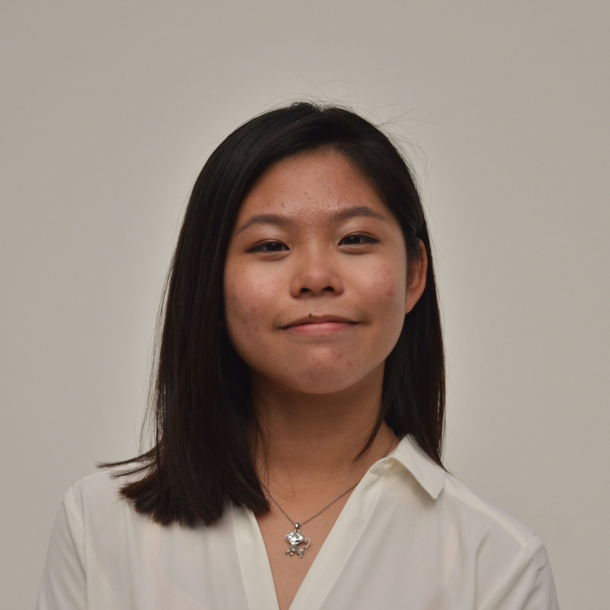

Hello! I am Enrica, a third year student pursuing Singapore Polytechnic's Diploma in Applied Chemistry
|  | Name: Ng Wan Ning, Enrica Course: Diploma in Applied Chemistry School: Chemical & Life Sciences, Singapore Polytechnic Year of Study: 3 Email: ng.wn.enrica@gmail.com |
|---|
I am an all rounded individual who enjoys pursuing hobbies involving the outdoors and art during my free time.
Some of my hobbies are as follows:
I enjoy climbing indoors in climbing gyms such as climb central and THall! I am also a level 2 certified climber.
I enjoy learning new parts of abseiling and frequently practice at the school's abseiling station whenever possible!
I frequently kayak at Sembawang Passionwave with my peers and go for expeditions!
I like to cook Chinese and Korean cuisine, but love to bake French and English breads and pastries!
My favourite medium is water colour painting!